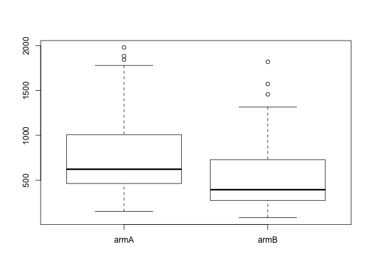

Data for Exercises 7.34 and 7.48
Censored
A data frame with 121 observations on the following 3 variables.
armA and armB indicating the
treatment a patient receivedYing, Z., Jung, S., Wei, L. 1995. “Survival Analysis with Median Regression Models.” Journal of the American Statistical Association, 90, 178-184.
Kitchens, L. J. (2003) Basic Statistics and Data Analysis. Duxbury
str(Censored)#> 'data.frame': 121 obs. of 3 variables: #> $ survival : int 730 1980 260 1883 1194 1624 967 1779 643 1645 ... #> $ treatment: Factor w/ 2 levels "armA","armB": 1 1 1 1 1 1 1 1 1 1 ... #> $ age : int 56 70 56 54 74 65 60 66 74 63 ... #>boxplot(survival ~ treatment, data = Censored)wilcox.test(survival ~ treatment, data = Censored, alternative = "greater")#> #> Wilcoxon rank sum test with continuity correction #> #> data: survival by treatment #> W = 2459.5, p-value = 0.0005437 #> alternative hypothesis: true location shift is greater than 0 #> #>